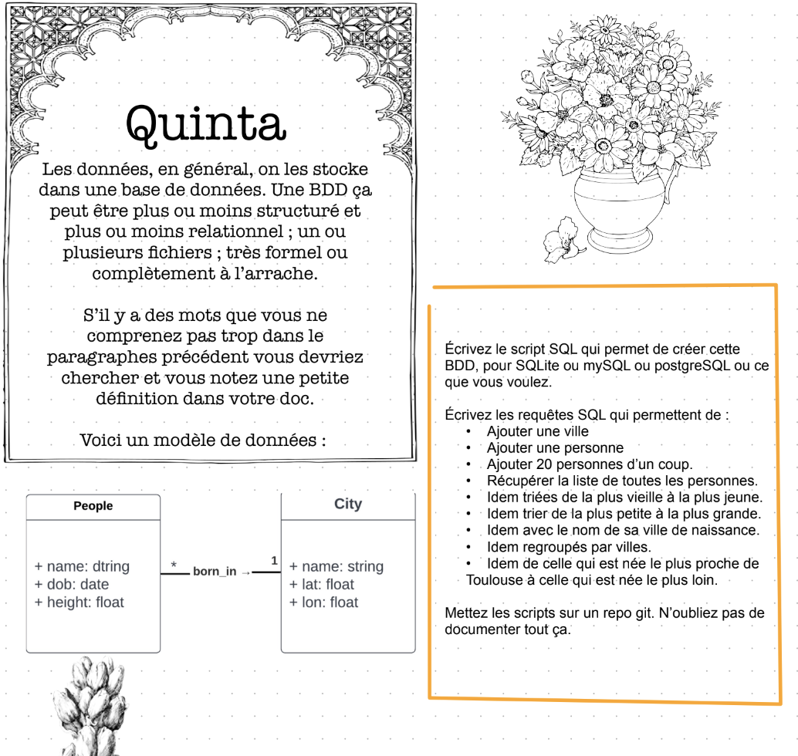

Chay Docs
À propos
Prairie
What is la prairie ?
Secunda
Tertia
Quarta
Quinta
Sexta
Septima
Octavia
Nona
Search
Previous
Next
Création de la base de donnée :
Création des tables :
Remplissage des tables avec des données :
Séries de Scripts demandés :

Création de la base de donnée :
Création des tables :
Remplissage des tables avec des données :
Séries de Scripts demandés :
Récupérer la liste de toutes les personnes triées de la plus vieille à la plus jeune :
Récupérer la liste de toutes les personnes triées de la plus petite à la plus grande :
Récupérer la liste de toutes les personnes triées avec le nom de leurs villes de naissance:
Récupérer la liste de toutes les personnes regroupées par villes.
Récupérer la liste de toutes les personnes triées par celle qui est née le plus proche de Toulouse à celle qui est née le plus loin:
Search
From here you can search these documents. Enter your search terms below.
Keyboard Shortcuts
Keys
Action
?
Open this help
n
Next page
p
Previous page
s
Search